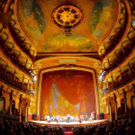
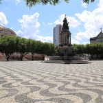
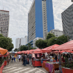
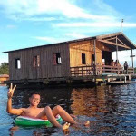

O Teatro Amazonas

Cartão postal da capital amazonense e símbolo dos tempos áureos do ciclo da borracha, é praticamente parada obrigatória para qualquer turista. Todos os dias ocorrem visitas guiadas onde os locais não pagam mediante comprovação como forma de incentivo ao conhecimento da cultura local.
O Teatro Amazonas é palco de espetáculos e festivais importantes e de renome nacional e internacional como o Festival Amazonas de Ópera, o qual colocou Manaus no radar como capital da ópera no Brasil. Além disso, possui um extenso corpo artístico contando com quatro orquestras, um coral e duas companhias de dança.
Nunca me esqueço do primeiro concerto de natal que assisti quando adolescente no teatro, que mesmo já não acreditando em mágica de natal me senti bastante tocado pelo espetátulo. A Secretaria de Cultura sempre busca inovar neste concerto e mesmo com crises, o concerto sempre acontece todos os anos no teatro.
Veja no mapa como chegar ao teatro.
O Largo de São Sebastião

Outro cartão postal de Manaus, fica localizado bem em frente ao Teatro Amazonas. Em seu centro fica o famoso Monunmento à Abertura dos Portos. A calçada da praça faz parte de um conjunto de obras viabilizado pelos magnatas da época áurea da borracha. Com vista para o teatro e para a igreja de São Sebastião, o Largo é também rodeado de casarões antigos, museus, bares e restaurantes.
Por conta das diversas programações culturais que ocorrem no local, é bastante frequentado por famílias e é um dos principais pontos de encontros entre amigos. Eu costumava participar de encontros no Largo em dias da comunidade de Pokemon GO pra capturar pokemons shinies antes da pandemia.
A feirinha de artesanato da Avenida Eduardo Ribeiro

Com local, dia e horário marcados, a feirinha da Avenida Eduardo Ribeiro acontece todos os domingos e duram a manhã inteira. Na feira são encontradas diversas barracas de café da manhã, artigos de vestuátio, cosméticos, livros usados, souvenirs, bijuterias e ainda quase sempre alguma banda tocando música ao vivo.
Sempre que posso vou à feira para garimpar livros usados de meu interesse e tomar um bom café regional.
Veja no mapa como chegar à feira.
Flutuantes

Pra quem deseja se ver livre do estresse da cidade e estar mais próximo da natureza, ir a um dos muitos flutuantes em Manaus pode ser uma boa pedida! Um flutuante é um estabelecimento que, para a surpresa de muitos, ... flutua! Mas flutua sobre o rio, normalmente sobre o Rio Negro.
Podem ser bares e restaurantes, podem também ter bandas, djs e até festas temáticas. Alguns são exclusivos para aluguel de um grupo limitado de pessoas.
Assista essa matéria sobre flutuantes em Manaus.